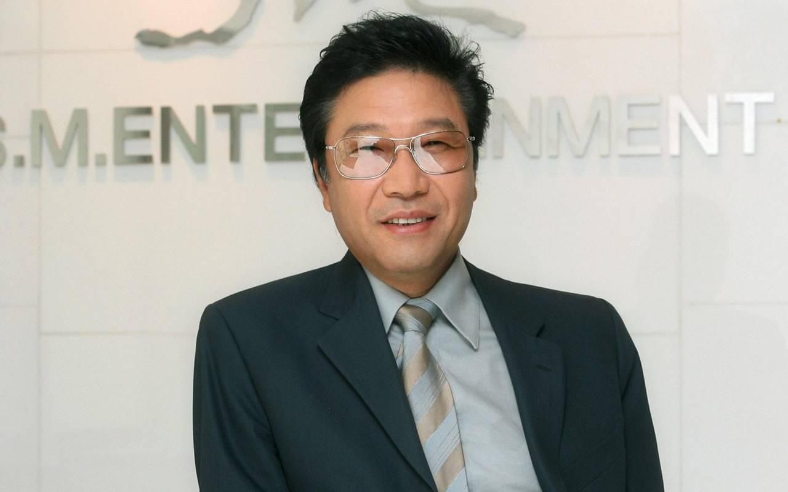
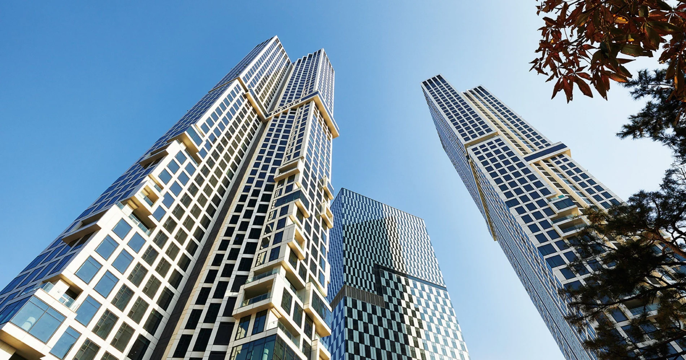

SM ENTERTAINMENT INDONESIA

Lee Soo-man (lahir 18 Juni 1952) adalah produser rekaman dan eksekutif hiburan asal Korea Selatan yang dikenal sebagai pendiri SM Entertainment, salah satu perusahaan hiburan terbesar di Korea Selatan. Ia kerap dijuluki sebagai
Presiden Kebudayaan karena perannya sebagai pelopor Korean Wave (Hallyu), khususnya dalam pengembangan industri K-pop. Lee Soo-man memulai kariernya sebagai penyanyi pada tahun 1972 saat masih berstatus mahasiswa di Seoul National
University. Ia kemudian mendirikan SM Entertainment pada tahun 1989, yang berkembang pesat menjadi agensi hiburan dan label rekaman terkemuka di Korea Selatan.
Lee Soo-man lahir di Seoul, Korea Selatan, pada 18 Juni 1952. Ia menempuh pendidikan di Seoul National University dari tahun 1971 hingga 1979. Karier musiknya dimulai pada tahun 1972 sebagai penyanyi solo, dan ia dikenal melalui beberapa lagu populer seperti “Happiness” dan “One Piece of Dream”. Selain bernyanyi, Lee juga aktif sebagai DJ radio dan pembawa acara televisi. Pada tahun 1980, ia membentuk grup musik Lee Soo-man and 365 Days. Namun, kebijakan sensor media yang ketat pada masa pemerintahan Chun Doo-hwan menyebabkan aktivitasnya di industri musik Korea terhambat, sehingga ia memutuskan untuk menghentikan sementara kariernya di bidang hiburan.
Pada awal 1980-an, Lee Soo-man pindah ke Amerika Serikat untuk melanjutkan pendidikan di bidang teknik komputer di California State University, Northridge, dan meraih gelar magister. Selama berada di Amerika, ia menyaksikan perkembangan pesat industri musik populer melalui MTV dan munculnya artis global seperti Michael Jackson. Pengalaman ini membentuk visinya untuk membangun fondasi industri musik pop Korea yang modern dan terstruktur. Lee kembali ke Korea Selatan pada tahun 1985 dengan tujuan mengembangkan industri hiburan nasional.
Setelah kembali ke Korea, Lee Soo-man kembali aktif di dunia hiburan sebagai DJ dan presenter. Pada tahun 1989, setelah mengumpulkan pengalaman dan modal, ia mendirikan perusahaan hiburan bernama SM Studio di Apgujeong, Seoul, dan menandatangani kontrak dengan penyanyi Hyun Jin-young. Pada dekade 1990-an, SM Studio mengembangkan sistem manajemen artis in-house yang mengelola seluruh aspek karier artis secara terpadu. Pendekatan ini menargetkan pasar remaja dan menekankan pembentukan artis secara menyeluruh, baik dari segi musik, penampilan, maupun citra. Pada tahun 1995, SM Studio resmi berganti nama menjadi SM Entertainment. Pada tahun 2010, Lee Soo-man mengundurkan diri dari posisi dewan direksi, namun tetap berperan aktif dalam bidang manajemen dan pembentukan artis.

S.M. Entertainment (SM엔터테인먼트) merupakan perusahaan hiburan asal Korea Selatan yang didirikan pada tahun 1995 oleh Lee Soo-man. Perusahaan ini tumbuh menjadi salah satu agensi hiburan terbesar dan paling berpengaruh di Korea
Selatan. Kegiatan bisnisnya mencakup label rekaman, produksi dan distribusi musik, penyelenggaraan konser, manajemen artis, serta penerbitan musik. SM dikenal luas sebagai salah satu pelopor sistem industri K-pop modern yang
terorganisasi dan berorientasi global.
Sejak awal berdirinya, S.M. Entertainment membangun sistem produksi artis secara terintegrasi atau in-house, mulai dari perekrutan trainee, pelatihan, produksi musik, hingga promosi. Pada akhir 1990-an, SM berhasil melahirkan grup
generasi pertama yang sangat berpengaruh seperti H.O.T, S.E.S., Shinhwa, dan Fly to the Sky. Kesuksesan grup-grup ini menjadi fondasi kuat bagi perkembangan industri idol K-pop di Korea Selatan.
Memasuki awal 2000-an, meskipun beberapa grup besar bubar atau meninggalkan agensi, SM tetap mempertahankan eksistensinya melalui restrukturisasi dan ekspansi bisnis. Perusahaan mulai menjalin afiliasi dengan berbagai pihak,
tercatat di KOSDAQ, serta memperluas jangkauan ke luar negeri, khususnya Jepang melalui kerja sama dengan Avex Trax. Pada periode ini pula, SM mendebutkan artis generasi kedua seperti TVXQ, TRAX, The Grace, dan Super Junior.
Pada periode 2005–2010, di bawah kepemimpinan CEO Kim Young-min, SM semakin menekankan strategi internasionalisasi. Berbagai artis dengan target pasar global diperkenalkan, termasuk Zhang Liyin, J-Min, Girls’ Generation, SHINee, dan
f(x). SM juga membentuk sub-unit Super Junior-M untuk pasar Tiongkok serta mulai merancang penetrasi pasar Amerika Serikat melalui anak perusahaan SM Entertainment USA.
Memasuki dekade 2010-an, SM memperluas bisnisnya melalui usaha patungan, akuisisi, dan pembentukan anak perusahaan di berbagai sektor. Grup EXO didebutkan dengan konsep dua unit untuk promosi di Korea dan Tiongkok, menandai
pendekatan lintas negara yang semakin kuat. Selain itu, SM mengembangkan SM C&C untuk merambah industri televisi dan hiburan non-musik, serta memperkenalkan berbagai proyek budaya dan pameran.
Inovasi konsep menjadi ciri khas SM pada periode selanjutnya, terutama melalui pengenalan New Culture Technology dan debut grup NCT dengan sistem anggota yang fleksibel dan unit tak terbatas. SM juga mendirikan label EDM ScreaM
Records, mengembangkan platform digital seperti SM Station, serta memperluas konten ke ranah gim, media digital, dan kolaborasi global. Pendekatan ini menunjukkan upaya SM untuk menyesuaikan diri dengan perubahan industri hiburan
dan teknologi.
Selain musik dan hiburan, S.M. Entertainment melakukan diversifikasi ke sektor lain seperti pariwisata, olahraga, fashion, properti, dan pendidikan. Perusahaan menjalin kerja sama dengan agensi model ESteem, mengembangkan proyek SM
Town Culture Complex, serta merencanakan pendirian sekolah internasional K-pop. Dengan pendapatan ratusan miliar won dan investasi strategis dari perusahaan global seperti Alibaba Group, S.M. Entertainment dipandang sebagai
perusahaan yang tidak hanya membentuk tren K-pop, tetapi juga membangun ekosistem hiburan global yang berkelanjutan.